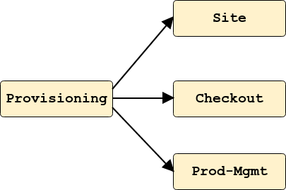
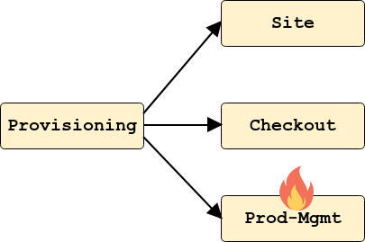
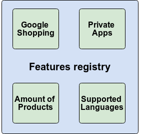
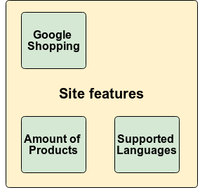
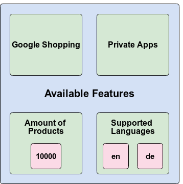
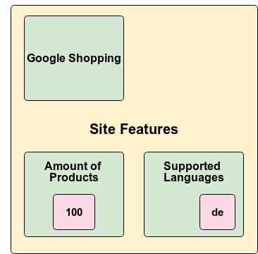
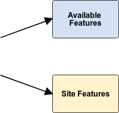

Team Amber Review
Sprint 18 - ^_^
Business KPIs and shop statisitcs
buy vs. build approach
Mixpanel
Requirements
- Tracking a typical customer journey
- Merchant shop statistics dashboard
- Automated onboarding of new merchants
- PM analytics / business KPIs
Tracking a typical customer journey
- Freedom to track arbitrary events
- Possible to track async server-side events
- Correlation of tracked frontend and backend data
- More effort to model events that need to be tracked
Merchant shop statistics dashboard
- Provide shop statistics in a dashboard in merchant-ui
- Option to optain raw data to create custom charts
Automated Onboarding of new merchants
- No automated provisioning flow, but...
- Use one Mixpanel account (data sink) for all merchants
- Option to filter tracked data on tenancy level
- Check if Mixpanel's ToS allows such an approach
PM analytics / business KPIs
- Option to aggregate statistics over all tenants (shops)
- Global statistics on tracked customer data
- Global statistics on tracked merchant data
- Mixpanel UI can be used as PM analytics tool
Cascading Deletes
Prerequisites
- Coordinated effort touching most of our services
- All planned user stories have been delivered
- Can't assert integration tests from outside
Preparation
- Selected a number of obsolete sites for deletion
- Provided credentials with privileges like MATe 3.0
Execution
- Issue
DELETErequest againstproductionenv - Watch logs, DLQs and DB tables
Aftermath
- Fix broken code
- Cleanup corrupt data and DLQs
- Create follow-up stories for resilience
Provisioning restartability
Shop provisioning: Happy path
Shop provisioning: Failing scenario
Shop provisioning: Failing scenario
POST /provisionings
HTTP/1.1 202 Accepted
X-Content-Type-Options: nosniff
X-XSS-Protection: 1; mode=block
Cache-Control: no-cache, no-store, max-age=0, must-revalidate
Pragma: no-cache
Expires: 0
X-Frame-Options: DENY
Location: https://yourshop.api.urn/provisionings/6
POST /provisionings/6/restart
HTTP/1.1 202 Accepted
X-Content-Type-Options: nosniff
X-XSS-Protection: 1; mode=block
Cache-Control: no-cache, no-store, max-age=0, must-revalidate
Pragma: no-cache
Expires: 0
X-Frame-Options: DENY
Location: https://yourshop.api.urn/provisionings/6
Features redesign
Available Features Vs Site Features
 Available Features Vs Site Features
 Feature Handling
Next Steps
- Piwik
- Support MATe implementation